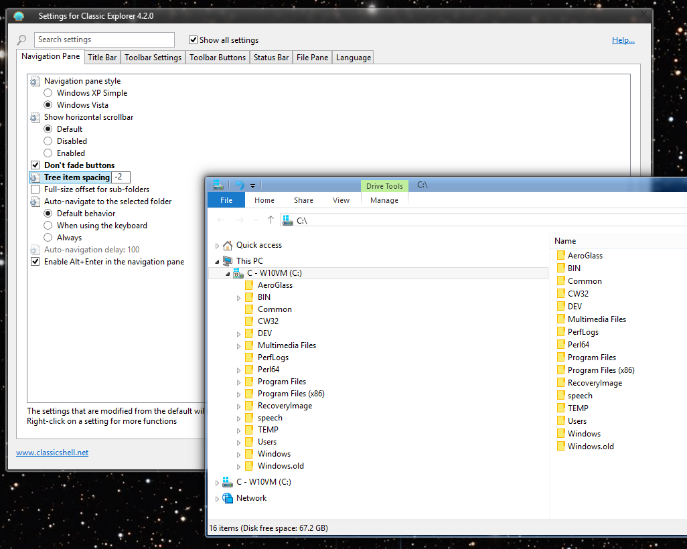
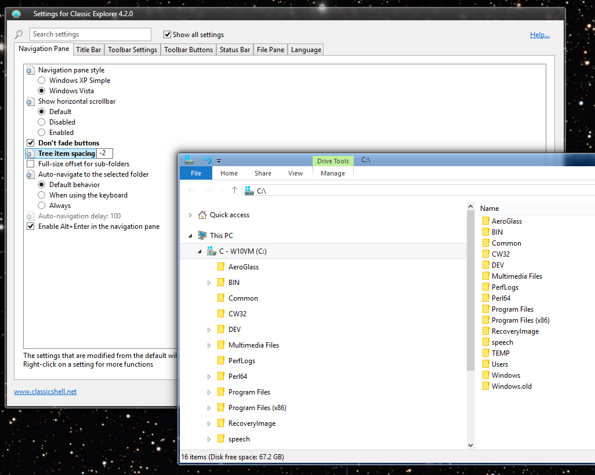

I figured out how to reproduce it reliably.
One need only go into the Folder Options dialog and do most anything - e.g., press the [Clear] history button.

-Noel
| Classic Shell http://www.classicshell.net/forum/ |
|
| Bug: Explorer Loses the Navigation Pane Spacing in Win 10 http://www.classicshell.net/forum/viewtopic.php?f=19&t=4198 |
Page 1 of 1 |
| Author: | NoelC [ Fri Jan 30, 2015 11:12 am ] |
| Post subject: | Bug: Explorer Loses the Navigation Pane Spacing in Win 10 |
I've configured File Explorer to compress the vertical spacing in the Navigation pane, so that I can see more. This is a GREAT feature of Classic Shell. Unfortunately, Explorer now seems to forget the spacing from time to time. I am not sure what triggers the behavior, but I got lucky when preparing screen grabs for this post and it happened. Note the difference from before to after here:   Is the spacing change tweak something you could reaffirm with Explorer at additional times? -Noel |
|
| Author: | Ivo [ Sat Jan 31, 2015 10:22 am ] |
| Post subject: | Re: Bug: Explorer Loses the Navigation Pane Spacing in Win 1 |
It would be helpful if you can pinpoint the action that triggers the problem. It could be navigation to a certain folder, or maybe launching some program. Also, opening a new Explorer window fixes it, right? |
|
| Author: | NoelC [ Sun Feb 01, 2015 5:55 pm ] |
| Post subject: | Re: Bug: Explorer Loses the Navigation Pane Spacing in Win 1 |
Launching a new window does indeed fix it. I've yet to pinpoint what causes it. It always seems to happen when I'm not looking at the Explorer window. A few moments ago I completed an installation of an application and now I noticed the rows in my two open Explorer windows are widely spaced again. I'll keep looking for a direct cause. -Noel |
|
| Author: | NoelC [ Thu Feb 19, 2015 9:52 am ] |
| Post subject: | Re: Bug: Explorer Loses the Navigation Pane Spacing in Win 1 |
I figured out how to reproduce it reliably. One need only go into the Folder Options dialog and do most anything - e.g., press the [Clear] history button. -Noel |
|
| Author: | mdemel [ Thu Mar 26, 2015 12:55 pm ] |
| Post subject: | Re: Bug: Explorer Loses the Navigation Pane Spacing in Win 1 |
I can confirm what Noel has posted. Also any setting applied under the View tab or the Search tab results in the spacing reverting to the original as well. Opening a new explorer window does "fix" it. Tested on Win10 build 10041. So far I've not found anything else that causes it. Classic Shell 4.2.0 Michael |
|
| Author: | Ivo [ Thu Mar 26, 2015 1:28 pm ] |
| Post subject: | Re: Bug: Explorer Loses the Navigation Pane Spacing in Win 1 |
Yes, this is caused by Classic Explorer. It will be fixed in the next version. |
|
| Author: | NoelC [ Sat Mar 28, 2015 1:08 pm ] |
| Post subject: | Re: Bug: Explorer Loses the Navigation Pane Spacing in Win 1 |
Thank you, Ivo. Looking forward to trying out the next beta. -Noel |
|
| Author: | Gaurav [ Sat Mar 28, 2015 8:54 pm ] |
| Post subject: | Re: Bug: Explorer Loses the Navigation Pane Spacing in Win 1 |
What a shame that the "Windows XP Classic" style of Navigation pane is no longer possible in Windows 10 thanks to Microsoft. Every Windows release cripples some Classic Shell feature. Update: About that Explorer folder tree corruption issue with the Navigation pane style set to "Windows XP Classic" I observed that if you set the "tree item spacing" to 4 or higher, the icons don't get corrupted even in 'Windows XP Classic' style. |
|
| Author: | NoelC [ Sat Mar 28, 2015 9:21 pm ] |
| Post subject: | Re: Bug: Explorer Loses the Navigation Pane Spacing in Win 1 |
Well, it's hardly unexpected. Unused code (in the typical sense) is being removed all the time, so re-enabling dormant functionality will become less and less viable over time. Not that I agree that they should be doing so. But they are. Explorer needed a rewrite a looong time ago. Most people nowadays, sadly, seem too ignorant to understand how much better it could be. -Noel |
|
| Author: | Ivo [ Sat Apr 11, 2015 10:57 am ] |
| Post subject: | Re: Bug: Explorer Loses the Navigation Pane Spacing in Win 1 |
The bug is fixed in the latest version 4.2.1. |
|
| Author: | NoelC [ Sat Apr 11, 2015 7:21 pm ] |
| Post subject: | Re: Bug: Explorer Loses the Navigation Pane Spacing in Win 1 |
Thank you! Don't forget to change the download page so it says "Release" instead of "Beta". Edit: Sorry, make that the "History" page, not "download". -Noel |
|
| Page 1 of 1 | All times are UTC - 8 hours [ DST ] |
| Powered by phpBB® Forum Software © phpBB Group https://www.phpbb.com/ |
|